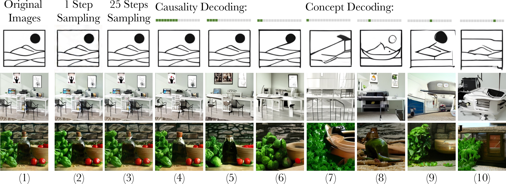
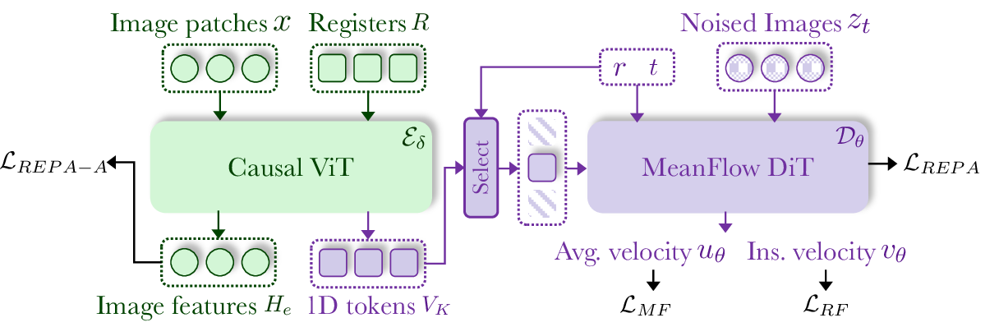
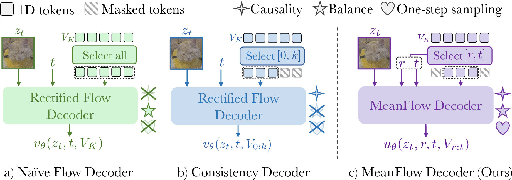

CaTok is a 1D causal image tokenizer with a MeanFlow decoder that enables fast one-step sampling and strong multi-step reconstruction while capturing diverse visual concepts across token intervals. The one-step and multi-step results are shown in cols. 2 and 3; cols. 3–7 illustrate a fine-to-coarse trend as tokens are reduced; cols. 7–10 reconstruct from different token segments, revealing distinct visual concepts.


@inproceedings{catok2026,
title={CaTok: Taming Mean Flows for One-Dimensional Causal Image Tokenization},
author={Chen, Yitong and Wu, Zuxuan and Qiu, Xipeng and Jiang, Yu-Gang},
booktitle={CVPR},
year={2026}
}
This website is adapted from Nerfies and MathVista, licensed under a Creative Commons Attribution-ShareAlike 4.0 International License.